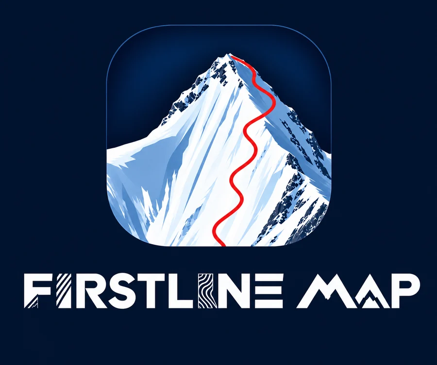

Die 3D-Karte für Skitouren in den Alpen. Gelände, Hangneigung und Lawinenlage auf einen Blick, direkt im Browser.
Karte öffnenGelände in 3D
Rinnen, Grate und Hänge so sehen, wie sie sind. Mit Satellitenbild und Winteransicht.
Hangneigung
Steilheit farbig über dem Gelände, damit du kritische Stellen früh erkennst.
Lawinenlage
Aktuelle Lawinenberichte der Warndienste im Alpenraum und Daten von Messstationen.
Tourenplaner
Aufstieg und Abfahrt planen, mit Höhenprofil und Spitzkehren im Gelände.
Offline
Gebiete vorab speichern und am Berg ohne Netz nutzen.
Kostenlos
Ohne Konto, ohne Werbung, ohne Tracking. Läuft am Handy und am Computer.
Firstline Map hilft bei der Planung, ersetzt aber nicht deine eigene Beurteilung vor Ort. Lies vor jeder Tour den aktuellen Lawinenlagebericht und entscheide im Gelände selbst.